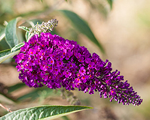
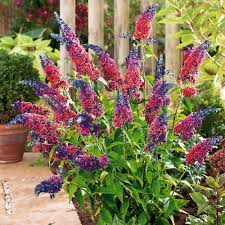
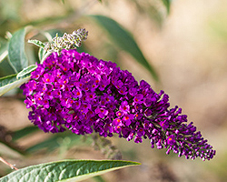
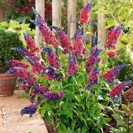

Der Sommerflieder stellt keine großen Ansprüche und benötigt kein spezielles Pflegeprogramm. Im Frühjahr können Sie ein wenig Dünger verabreichen. Wenn Sie es mal vergessen, kommt der Strauch trotzdem klar.
Sofern es sich um einen jungen Sommerflieder handelt, benötigt der Strauch während der Sommermonate, insbesondere in trockenen Zeiten, regelmäßig Wasser. Ältere Sträucher hingegen können Sie vernachlässigen – gründliches Wässern ist dann nur in regenarmen Zeiten notwendig.
Zur Pflege des Sommerflieders gehört auch der richtige Schnitt.
Im Sommer bewaffnen Sie sich mit einer sauberen und scharfen Gartenschere. Denn möglichst direkt nach der Blüte werden die ausgeblühten Rispen abgeschnitten, damit die Selbstaussaat verhindert wird. Diese kommen besser nicht auf den Kompost, sondern in den Müll. Denn oftmals überleben die Samen im Komposthaufen und werden so ungewollt im Garten verteilt. Bei der Gelegenheit können Sie dann auch gleich abgestorbene und störende Äste entfernen.
Das zeitige Frühjahr hingegen können Sie für einen Rückschnitt einplanen. Dazu verwenden Sie am besten eine scharfe und saubere Astschere oder gar eine Säge – an einem frostfreien und trockenen Tag. Wenn Sie ganz radikal vorgehen möchten, setzen Sie den Sommerflieder auf den Stock. Dabei lassen Sie den Stamm zwischen einem halben bis ganzen Meter über dem Boden stehen. Nicht ganz so mutige Hobbygärtner begnügen sich mit einem Rückschnitt oder einen nicht ganz so tiefen Radikalschnitt.
Kürzen Sie dabei den jeweiligen Hauptast so ein, dass Sie direkt über einer Knospe schneiden oder sägen, die nach außen schaut. Wenn Sie einen Rückschnitt an den Seitenästen vornehmen, achten Sie ebenfalls auf die vorhandenen Knospen.
 


